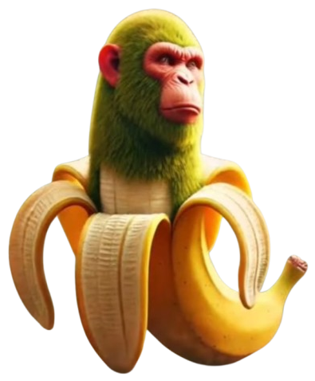

Pro náš projekt jsme se rozhodli vytvořit hru jménem Brainrot Clicker. Hra funguje na principu klasického cookie clickeru.
Hra obsahuje:
- Vylepšování
- Různé Brainrot postavy
- Líbezné zvuky
- Achievmenty
Pro náš projekt jsme se rozhodli vytvořit hru jménem Brainrot Clicker. Hra funguje na principu klasického cookie clickeru.
Dnes je
HTML
CSS
JavaScript
Chimpanzini Bananini je banánový šimpanz.
